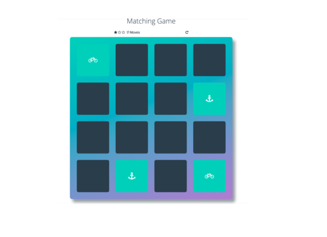

In a fast-paced and continuously-evolving tech/software domain; I believe that being able to quickly adapt, learn, and grow a diversified skill set, is important for continuous success and relevancy in the market. And that’s something I can say, has been demonstrated throughout my career.
I've 11 years of experience in software and integrated solutions, and privileged to have success in a variety of management/leadership, business, and technical roles.
I’ve experience working at startups, with leading multinational organizations, and with customers, partners, colleagues, and freelancers from 50+ countries.
I started my career back in 2007 as a software developer, promoted multiple times until i became a team lead. Then switched to business and management roles. Now i want to brush up my skills and get back to being a full-time developer again!
Here are a few work samples I've created. The first of which is my existing website, and the rest are projects that I've created during my Front-End Web Development Nanodegree.
My Existing Website
This is my existing website, where I provide samples of my work - mainly as a product manager -. It has a link to my LinkedIn profile and a contact me form. It is built using WordPress.

The Memory Game
The Memory Game is a complete browser-based card matching game (also known as Concentration). But this isn’t just any memory game! It’s a shnazzy, well-designed, feature-packed memory game! It is built using HTML, CSS, and JavaScript.
Restaurant Reviews App
In this porject, I'll convert a static webpage to a mobile-ready web application. Where I'll will take a static design that lacks accessibility and convert the design to be responsive on different sized displays and accessible for screen reader use. I will also begin converting this to a Progressive Web Application by caching some assets for offline use.
Neighborhood Map
This is a single page application featuring a neighborhood map. It has interactive map functionalities including highlighted locations, third-party data about those locations, and various ways to browse the content.